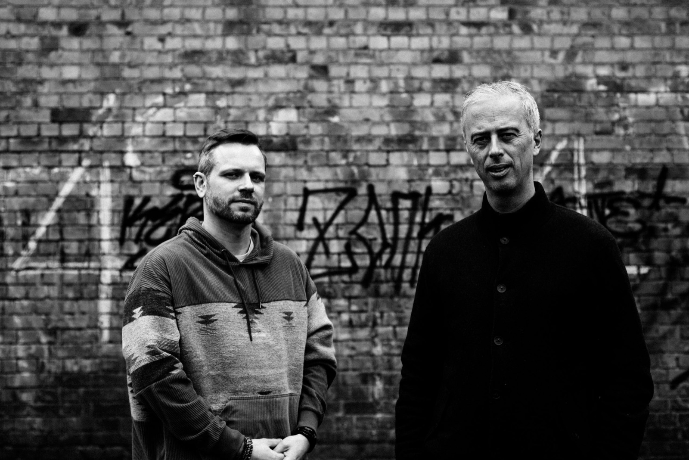
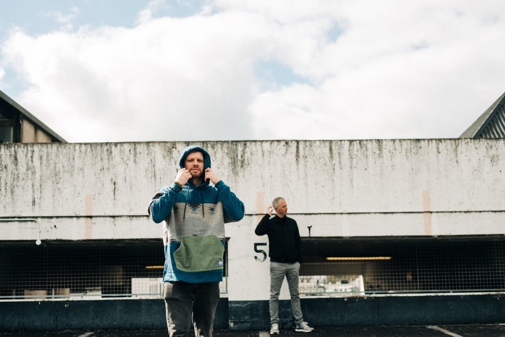

About Us
Techno & house producers
Erra P. is a duo of artists, music producers, and DJs based in Ireland and Amsterdam, known for their confident and refined approach to Techno and House music. With decades of collective experience in music production, they have a compelling sonic identity that is unapologetically dance-floor focused, rooted in the underground electronic music scene.
Formed in 2016, Erra P. embodies the collective musical experiences of Steffen Coonan AKA AiSenma, a long time DJ and Producer, with a keen ear for House and Techno, and Ciaran O’Brien, a classically trained musician with a deep understanding of musical composition, engineering and mastering. This fusion of backgrounds and skills has enabled them to craft a sound that stands out in the saturated landscape of electronic music.

At the heart of their ethos is a commitment to clarity and simplicity in their music. In a world where electronic music productions often suffer from an overabundance of sounds competing for attention, Erra P. takes a simplistic approach. By adopting a minimal and reductive method to music production and audio mixing, they carefully streamline their sounds, resulting in tracks that are accessible, but still hypnotic and engaging. Their music is designed to be immersive and emotionally resonant, with a focus on getting you moving – whether that’s on the dance floor or in a moment of personal reflection.

Erra P. stands out in the electronic music scene with their thoughtful approach to production and dedication to creating immersive experiences that leave a lasting impression. Their music is designed to move you, both emotionally and physically. With a steady stream of new projects, Erra P. invites you to join them on a journey through the world of underground dance music, and beyond. They’re always open to exploring new sounds and collaborating with like-minded musicians or visual artists. If you would like to work with Erra P., please get in touch via erraproject@gmail.com.